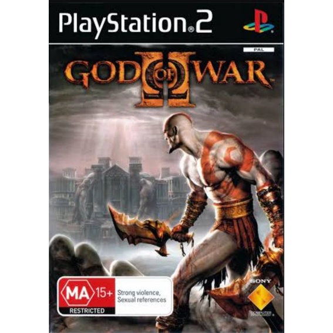

God of War (2005)
No início do jogo, vemos Kratos se posicionando na beira de um penhasco, dizendo que os deuses do Olimpo o abandonaram e que não havia mais esperança para ele, que então se joga do penhasco com a intenção de suicidar-se. O jogo então retrocede para três semanas antes, quando Kratos está em um navio no Mar Egeu que está sendo atacado pela temível Hidra.

God of War II (2007)
Após Kratos se tornar o novo deus da guerra, passa a guiar os soldados de Esparta, liderando-os sobre várias batalhas e destruindo várias cidades. Antes de descer do Olimpo para ajudar seus guerreiros espartanos a destruir a cidade de Rodes, Kratos é avisado por Atena sobre as consequências de seus atos.
God of War Chains of Olympus (2008)
Durante dez anos de Kratos servindo aos deuses do Olimpo, ele é enviado à cidade de Ática para ajudar a defender a cidade da invasão do exército persa. Após ter matado com sucesso o Rei Persa, dizimando seu exército e seu bicho de estimação, o basilisco, Kratos observa o sol cair do céu, mergulhando o mundo na escuridão. Kratos luta pelo seu caminho através da cidade de Maratona e testemunha a névoa negra do olimpiano Morfeu, que agora cobre a terra na escuridão. Kratos também ouve uma melodia de flauta assombrosa na qual eventualmente reconhece como a canção uma vez tocada por sua Filha, assassinada por ele próprio, Calíope.
God of War Ghost of Sparta (2010)
Kratos, o Fantasma de Esparta, foi posto no lugar de Ares como o novo Deus da Guerra no Monte Olimpo. Ainda assombrado por visões de seu passado mortal, Kratos decide, contra os conselhos da deusa Atena, explorar seu passado e viaja para o Templo de Posseidon (Poseidon), localizado dentro da Cidade de Atlântida (Atlantis).
God of War III (2010)
God of War III se inicia imediatamente no final de God of War II, com Kratos sobre Gaia e os outros titãs escalando o Monte Olimpo em encontro aos deuses.Kratos confronta Zeus e os deuses do Olimpo em sua luta final.
God of War Ascension (2013)
Ascension foca-se na história de Kratos na busca de redenção, devido aos seus pecados do passado e no aumento da sua ira para se libertar do vinculo que o liga a Ares.
God of War (2018)
Kratos embarca em uma nova jornada nas terras nórdicas com seu filho Atreus.

God of War Ragnarok (2022)
Atreus anseia por conhecimento para ajudá-lo a entender a profecia de “Loki” e o papel que ele desempenhará no Ragnarök. Kratos deve decidir se será acorrentado pelo medo de repetir seus erros ou se libertar de seu passado para ser o pai que Atreus precisa..
Kratos Deus da Guerra
Evolução do Kratos ao percorrer da história.